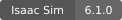
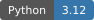

安装#


根据需要安装的组件和运行方式，选择适合的安装路径。除非需要自行管理环境、使用下载的 Isaac Sim 软件包，或部署到 Docker、云端，否则建议从 uv 自动安装开始。点击下方卡片可跳转到本页对应的完整说明。
选择安装路径#
在 Isaac Lab 源码目录中运行，由 uv 创建并管理环境。 推荐大多数用户采用。
使用旧版安装脚本，在虚拟环境中选择要安装的软件包。
自行管理 uv、venv 或 conda 环境，并通过 pip 安装 Isaac Sim。
将已发布的 Isaac Lab 软件包作为自己项目的依赖安装。
下载 Isaac Sim，并使用其中自带的 Python 解释器。
构建或修改 Isaac Sim 本身，适用于高级开发需求。
在容器中开发，或向高性能计算集群提交容器化任务。
在受支持的云平台上创建远程 GPU 工作站。
系统要求#
完整的 Isaac Sim 工作流程需要在 Ubuntu 22.04 及以上版本或 Windows 11 上使用 Python 3.12。工作站应安装较新的 NVIDIA 生产分支驱动，并至少配备 32 GB 内存和 16 GB GPU 显存。渲染可能需要更多显存。请对照 Isaac Sim 系统要求 和 Omniverse 技术要求 ，确认机器配置符合要求。
不支持 Isaac Sim 5.1 及更早版本。请使用 Isaac Sim 6.1 和 Python 3.12。
CUDA 13.0 版 PyTorch 在 Linux 上要求 NVIDIA 驱动版本不低于 580.65.06 ，在 Windows 上不低于 580.88 ，详见 PyTorch CUDA 13.0 要求 。CUDA 13.0 wheel 支持 Blackwell GPU。
请使用最新的 NVIDIA 生产分支驱动。Linux x86_64 和 aarch64 推荐 580.95.05 或更高版本，DGX Spark 推荐 580.142 ，Windows 推荐 581.42.00 。如果新 GPU 或驱动问题需要更新版本，请从 Unix 驱动归档 获取生产分支驱动。在 Linux 上，可以使用 Isaac Sim 兼容性检查器 和 Linux 故障排查指南 ，识别不受支持的主机配置。
Linux aarch64 和 DGX Spark 的要求
DGX Spark 需要 CUDA 13 或更高版本，以及对应的 PyTorch 构建版本。在安装 Isaac Lab 前，先安装构建所需的依赖：
sudo apt install python3.12-dev libgl1-mesa-dev libx11-dev libxcursor-dev \
libxi-dev libxinerama-dev libxrandr-dev
目前，SkillGen、XR 遥操作、直播流、Hub Workstation Cache、Cosmos Transfer1 和 RLinf 在 DGX Spark 上尚未得到支持或验证。SkillGen 依赖原生 CUDA/C++ 扩展，其工具链尚未在 DGX Spark 上验证；XR 则仍受限于尚未验证的编码性能。
使用 uv 自动安装（推荐）#
这是从 Isaac Lab 源码目录开始配置环境的最快方式。 uv 在每次调用时解析项目环境，因此无需手动创建或激活环境。
安装 uv ，克隆 Isaac Lab，然后启动工作流程：
curl -LsSf https://astral.sh/uv/install.sh | sh
git clone git@github.com:isaac-sim/IsaacLab.git --branch release/3.0.0
cd IsaacLab
git clone https://github.com/isaac-sim/IsaacLab.git --branch release/3.0.0
cd IsaacLab
# Newton backend without Isaac Sim
uv run isaaclab train --rl_library rsl_rl \
--task Isaac-Cartpole-Direct physics=newton_mjwarp
# OV PhysX backend
uv run --extra ovphysx isaaclab train --rl_library rsl_rl \
--task Isaac-Cartpole-Direct physics=ovphysx
# Full Isaac Sim support
uv run --extra isaacsim isaaclab train --rl_library rsl_rl \
--task Isaac-Cartpole-Direct physics=isaacsim_physx
# Play a policy
uv run isaaclab play --rl_library rsl_rl --task Isaac-Cartpole-Direct --viz newton
curl -LsSf https://astral.sh/uv/install.sh | sh
git clone git@github.com:isaac-sim/IsaacLab.git --branch release/3.0.0
cd IsaacLab
git clone https://github.com/isaac-sim/IsaacLab.git --branch release/3.0.0
cd IsaacLab
# Newton backend
uv run isaaclab train --rl_library rsl_rl \
--task Isaac-Cartpole-Direct physics=newton_mjwarp
# OV PhysX backend
uv run --extra ovphysx isaaclab train --rl_library rsl_rl \
--task Isaac-Cartpole-Direct physics=ovphysx
# Full Isaac Sim support
uv run --extra isaacsim isaaclab train --rl_library rsl_rl \
--task Isaac-Cartpole-Direct physics=isaacsim_physx
# Play a policy
uv run isaaclab play --rl_library rsl_rl --task Isaac-Cartpole-Direct --viz newton
备注
在 aarch64 上直接执行会导入 Isaac Sim 的 Python 命令时，请在命令前添加 LD_PRELOAD=/lib/aarch64-linux-gnu/libgomp.so.1 。
在 Windows 上克隆仓库前，请先启用长路径支持。在具有管理员权限的 PowerShell 窗口中运行：
New-ItemProperty -Path "HKLM:\SYSTEM\CurrentControlSet\Control\FileSystem" -Name LongPathsEnabled -Value 1 -PropertyType DWORD -Force
然后打开新的命令提示符窗口并运行：
powershell -ExecutionPolicy ByPass -c "irm https://astral.sh/uv/install.ps1 | iex"
git clone git@github.com:isaac-sim/IsaacLab.git --branch release/3.0.0
cd IsaacLab
git clone https://github.com/isaac-sim/IsaacLab.git --branch release/3.0.0
cd IsaacLab
:: Newton backend without Isaac Sim
uv run isaaclab train --rl_library rsl_rl ^
--task Isaac-Cartpole-Direct physics=newton_mjwarp
:: OV PhysX backend
uv run --extra ovphysx isaaclab train --rl_library rsl_rl ^
--task Isaac-Cartpole-Direct physics=ovphysx
:: Full Isaac Sim support
uv run --extra isaacsim isaaclab train --rl_library rsl_rl ^
--task Isaac-Cartpole-Direct physics=isaacsim_physx
:: Play a policy
uv run isaaclab play --rl_library rsl_rl --task Isaac-Cartpole-Direct --viz newton
uv run 会自动安装核心依赖。 --extra <name> 将选定的可选集成加入命令运行环境，需放在 isaaclab 前。例如， --extra ov 同时安装 ovphysx 和 ovrtx 后端。多个依赖组可以用逗号分隔，也可以重复使用 --extra 。各依赖组之间没有冲突，可组合安装到同一环境中。 --extra all 会安装预先选定的 ov 、 rl-games 、 sb3 、 skrl 、 rsl-rl 、 rerun 和 viser 依赖组，但不包含 Isaac Sim，以及 rlinf 、 mimic 、 teleop 、 tetrahedralization 、 video 和 leapp 等专用依赖组；这些需按名称显式添加：
uv run --extra all isaaclab train --rl_library rsl_rl \
--task Isaac-Cartpole-Direct physics=ovphysx
可用的可选依赖组见 可选依赖组 。
uv run --extra <name> <command> 会先将选定的可选依赖组同步到项目环境，再运行命令。
源码仓库在 Linux x86_64、Linux aarch64 和 Windows 上均选用 CUDA 13.0 版 PyTorch，无需添加其他命令参数。已发布的 wheel 固定了 PyTorch 版本，但下游 uv 项目必须自行配置 PyTorch 软件包索引，因为 uv 不会继承依赖项目中的 tool.uv.sources 设置。
接下来阅读 快速入门 ，从第一个任务开始，了解可用命令、强化学习库、后端和可视化器。
isaaclab.sh 安装脚本（旧版方式）#
不使用 Kit 的安装方式采用 Python 3.12 环境，不安装 Isaac Sim。克隆 Isaac Lab，创建并激活环境，然后安装默认的源码软件包及依赖。开始前，请先安装 uv 或 conda ：
git clone git@github.com:isaac-sim/IsaacLab.git --branch release/3.0.0
cd IsaacLab
git clone https://github.com/isaac-sim/IsaacLab.git --branch release/3.0.0
cd IsaacLab
uv venv --python 3.12 --seed env_isaaclab
source env_isaaclab/bin/activate
uv pip install --upgrade pip
./isaaclab.sh -i
uv venv --python 3.12 --seed env_isaaclab
env_isaaclab\Scripts\activate
uv pip install --upgrade pip
isaaclab.bat -i
conda create -n env_isaaclab python=3.12
conda activate env_isaaclab
python -m pip install --upgrade pip
./isaaclab.sh -i
conda create -n env_isaaclab python=3.12
conda activate env_isaaclab
python -m pip install --upgrade pip
isaaclab.bat -i
-i 始终安装核心源码软件包。不指定值时，还会安装可选的 mimic 和 teleop 子模块，以及默认的 Newton、强化学习和可视化器依赖。它不会安装 tetrahedralization 、 contrib 、 ov 或 Isaac Sim；需要时请显式选择。
使用 -i core 仅安装核心软件包。其他情况下，请传入以逗号分隔的选择器列表：
选择器 |
安装内容 |
|---|---|
|
模仿学习工具。 |
|
遥操作工具（Linux x86_64）。 |
|
Newton 交互式查看器依赖。 |
|
强化学习框架依赖，可选择 |
|
可视化器依赖，可选择 |
|
自动生成四面体网格所需的依赖。 |
|
用于 RLinF 的 Contrib 运行时依赖。 |
|
OV 运行时 wheel，可选择 |
|
Isaac Sim pip 软件包。 |
例如:
# Core packages only
./isaaclab.sh -i core
# Newton, RSL-RL, and the Newton visualizer
./isaaclab.sh -i 'newton,rl[rsl-rl],visualizer[newton]'
# OVRTX runtime dependencies
./isaaclab.sh -i 'ov[ovrtx]'
:: Core packages only
isaaclab.bat -i core
:: Newton, RSL-RL, and the Newton visualizer
isaaclab.bat -i "newton,rl[rsl-rl],visualizer[newton]"
:: OVRTX runtime dependencies
isaaclab.bat -i "ov[ovrtx]"
包含 Isaac Sim 的 Python 环境#
如果需要可编辑的 Isaac Lab 源码仓库、完整的 Isaac Sim 支持，以及自行管理的 Python 环境，请选择这种方式。在安装 Isaac Sim 或 Isaac Lab 前，先创建并激活环境。Isaac Sim 的 pip 软件包在 Linux 上要求 GLIBC 2.35 或更高版本。在 Windows 上安装前，请启用 Windows 长路径支持 。
备注
如果计划 配置 Visual Studio Code ，请改用 下载的 Isaac Sim 软件包 。
创建并激活 Python 3.12 环境：
uv venv --python 3.12 --seed env_isaaclab
source env_isaaclab/bin/activate
uv venv --python 3.12 --seed env_isaaclab
env_isaaclab\Scripts\activate
conda create -n env_isaaclab python=3.12
conda activate env_isaaclab
安装适用于当前平台的 Isaac Sim 和 CUDA 13.0 版 PyTorch：
uv pip install "isaacsim[all,extscache]==6.1.0.0" --extra-index-url https://pypi.nvidia.com --index-strategy unsafe-best-match --prerelease=allow
python -m pip install "isaacsim[all,extscache]==6.1.0.0" --extra-index-url https://pypi.nvidia.com
uv pip install -U torch==2.11.0 torchvision==0.26.0 --index-url https://download.pytorch.org/whl/cu130
python -m pip install -U torch==2.11.0 torchvision==0.26.0 --index-url https://download.pytorch.org/whl/cu130
uv pip install -U torch==2.11.0 torchvision==0.26.0 --index-url https://download.pytorch.org/whl/cu130
python -m pip install -U torch==2.11.0 torchvision==0.26.0 --index-url https://download.pytorch.org/whl/cu130
备注
在 DGX Spark 等 aarch64 系统上，安装 Isaac Sim 前先安装所需的开发软件包：
sudo apt install python3.12-dev libgl1-mesa-dev libx11-dev libxcursor-dev libxi-dev \
libxinerama-dev libxrandr-dev
uv pip install -U torch==2.11.0 torchvision==0.26.0 --index-url https://download.pytorch.org/whl/cu130
python -m pip install -U torch==2.11.0 torchvision==0.26.0 --index-url https://download.pytorch.org/whl/cu130
备注
如果同时预加载系统和 PyTorch 的 GNU OpenMP 库，Isaac Sim 可能产生 libgomp 警告。请使用系统 OpenMP 库：
unset LD_PRELOAD
export LD_PRELOAD=/lib/aarch64-linux-gnu/libgomp.so.1
备注
如果导入 omni.client 或 torch 时，因 libcarb.so 无法分配静态 TLS 块而失败，请在启动 Python 前预加载 libcarb.so ：
export LD_PRELOAD=$(python -c "import sys,os;[print(os.path.join(p,'omni','client','libcarb.so')) for p in sys.path if os.path.isfile(os.path.join(p,'omni','client','libcarb.so'))]" 2>/dev/null | head -1)${LD_PRELOAD:+:$LD_PRELOAD}
./isaaclab.sh -p 和 conda 激活钩子均会自动完成此配置。
首次启动会要求接受 NVIDIA Omniverse 最终用户许可协议（EULA）。非交互式环境可设置 OMNI_KIT_ACCEPT_EULA=yes 。通过 isaacsim 验证安装。
保持环境处于激活状态，克隆、安装并验证 Isaac Lab：
git clone git@github.com:isaac-sim/IsaacLab.git --branch release/3.0.0
cd IsaacLab
git clone https://github.com/isaac-sim/IsaacLab.git --branch release/3.0.0
cd IsaacLab
sudo apt install cmake build-essential
./isaaclab.sh -i
./isaaclab.sh -p scripts/tutorials/00_sim/create_empty.py --viz kit
isaaclab.bat -i
isaaclab.bat -p scripts\tutorials\00_sim\create_empty.py --viz kit
验证命令应打开一个黑色的仿真器视口。首次启动时，Isaac Sim 需要下载扩展，可能耗时十分钟以上。
Isaac Lab Python 软件包#
如果将 Isaac Lab 作为外部 Python 项目的依赖，请选择这种方式。已发布的 isaaclab 软件包提供统一的 train 、 play 、 zero_agent 、 random_agent 、 benchmark 、 train_multigpu 、 demo 和 example 命令。下游项目可通过 isaaclab.tasks Python 软件包入口点组注册自己的任务包；模板生成器创建的项目会自动配置此入口点。
创建基于 Isaac Lab 的项目，请参阅 创建自己的项目或任务 。
备注
Isaac Lab wheel 随主要版本发布，并非每个补丁版本都会发布。
安装尚未发布的 Git 版本#
也可以直接从 Isaac Lab 的某个 Git 版本构建整合软件包。将 uv 指向 tools/wheel_builder 子目录，即可使用与已发布 wheel 相同的依赖元数据和打包运行时资源：
[project]
dependencies = ["isaaclab"]
[tool.uv.sources]
isaaclab = { git = "https://github.com/isaac-sim/IsaacLab.git", rev = "<git-revision>", subdirectory = "tools/wheel_builder" }
使用提交哈希或发布标签，以保证环境可复现。也可以使用分支名称，但更新锁文件时可能选用更新的 Isaac Lab 提交及依赖集合。
安装已发布的 wheel#
使用 NVIDIA 软件包索引安装 3.0.0rc1 预发布版本。安装已发布的 wheel 时，不要使用上一种方式中的 [tool.uv.sources] Git 配置项。
选择由 uv 管理依赖的方式。两种方式都从基础 isaaclab 软件包开始，仅在项目需要时添加可选功能。
uv init --python 3.12 my_isaaclab_project
cd my_isaaclab_project
uv add --index https://pypi.nvidia.com isaaclab==3.0.0rc1
uv venv --python 3.12 env_isaaclab
source env_isaaclab/bin/activate
uv pip install --index https://pypi.nvidia.com isaaclab==3.0.0rc1
uv venv --python 3.12 env_isaaclab
env_isaaclab\Scripts\activate
uv pip install --index https://pypi.nvidia.com isaaclab==3.0.0rc1
uv venv --python 3.12 env_isaaclab
source env_isaaclab/bin/activate
uv pip install --index https://pypi.nvidia.com isaaclab==3.0.0rc1
项目方式会将依赖写入 pyproject.toml 并更新 uv.lock ，适用于将 Isaac Lab 作为应用组成部分的长期维护项目。探索性或临时工作可以使用独立环境。
可选依赖组#
仅在项目需要时添加可选依赖组。大多数依赖组可以在独立环境中通过 uv pip install "isaaclab[<extra>]" 安装，也可以在 uv 项目中通过 uv add "isaaclab[<extra>]" 添加。 importers 和 isaacsim 依赖组应使用下方专门的命令。
可选依赖组 |
安装内容 |
|---|---|
|
从 pypi.nvidia.com 安装 Isaac Sim（ |
|
两个 OV 后端：OV PhysX 和 OV RTX。 |
|
仅 OV PhysX / 仅 OV RTX。 |
|
对应的强化学习框架。 |
|
对应的可视化器。 |
|
Isaac Lab Mimic / XR 遥操作。wheel 的 |
|
网格四面体化 / 视频录制。 |
|
LEAP 模型导出支持。 |
|
在不使用 Isaac Sim 的情况下独立转换 URDF 和 MJCF。 |
|
预先选定的 |
|
开发测试与文档工具。 |
使用 all 安装上方预先选定的依赖组。Isaac Sim、独立导入器、专用依赖组（ rlinf 、 mimic 、 teleop 、 tetrahedralization 、 video 、 leapp ）以及开发用 test 工具仍需显式选择。
备注
已发布 wheel 的元数据不包含 RL-Games 和 Robomimic，因为 Isaac Lab 使用的版本从 Git 安装，未提供软件包索引中的 wheel。要使用这些集成，请从源码仓库安装 Isaac Lab，并选择对应的 rl-games 或 mimic 依赖组。
备注
在 Linux 上， mimic 依赖组可能需要从源码构建 egl-probe 。请先通过 sudo apt install cmake build-essential 安装 CMake 和 C++ 编译器。
安装 importers 可选依赖组#
安装此依赖组，即可在不使用 Isaac Sim 的情况下转换 URDF 和 MJCF 文件。
警告
请使用下方完整命令。如果不覆盖依赖版本，导入器依赖组可能降级基础 Isaac Lab 安装使用的软件包。覆盖设置会保留 Isaac Lab 已测试的版本。
uv pip install "isaaclab[importers]==3.0.0rc1" \
--overrides "https://raw.githubusercontent.com/isaac-sim/IsaacLab/v3.0.0-EA/tools/wheel_builder/uv-overrides.txt" \
--index https://pypi.nvidia.com \
--index-strategy unsafe-best-match
安装 isaacsim 可选依赖组#
Isaac Sim 6.1 固定的部分依赖版本与 Isaac Lab 冲突。请使用已测试的覆盖设置安装 isaacsim 依赖组：
uv pip install "isaaclab[isaacsim]==3.0.0rc1" \
--overrides "https://raw.githubusercontent.com/isaac-sim/IsaacLab/v3.0.0-EA/tools/wheel_builder/uv-overrides.txt" \
--extra-index-url https://pypi.nvidia.com \
--index-strategy unsafe-best-match
需要时可在方括号中添加其他依赖组。例如，使用 isaaclab[isaacsim,all] 同时安装预先选定的 all 依赖组。
安装支持 CUDA 的 PyTorch#
使用对应平台的命令安装 CUDA 13.0 版 PyTorch：
uv pip install -U torch==2.11.0 torchvision==0.26.0 --index-url https://download.pytorch.org/whl/cu130
uv pip install -U torch==2.11.0 torchvision==0.26.0 --index-url https://download.pytorch.org/whl/cu130
备注
在安装 Isaac Lab 前，先安装所需的 Python、OpenGL 和 X11 开发软件包：
sudo apt install python3.12-dev libgl1-mesa-dev libx11-dev libxcursor-dev libxi-dev \
libxinerama-dev libxrandr-dev
uv pip install -U torch==2.11.0 torchvision==0.26.0 --index-url https://download.pytorch.org/whl/cu130
备注
如果 Isaac Sim 报告 OpenMP 预加载警告，请使用系统 GNU OpenMP 库：
unset LD_PRELOAD
export LD_PRELOAD=/lib/aarch64-linux-gnu/libgomp.so.1
备注
如果导入 omni.client 或 torch 时，因 libcarb.so 无法分配静态 TLS 块而失败，请在启动 Python 前预加载 libcarb.so ：
export LD_PRELOAD=$(python -c "import sys,os;[print(os.path.join(p,'omni','client','libcarb.so')) for p in sys.path if os.path.isfile(os.path.join(p,'omni','client','libcarb.so'))]" 2>/dev/null | head -1)${LD_PRELOAD:+:$LD_PRELOAD}
如果安装了 isaacsim 依赖组，请在运行项目之前先验证它：
isaacsim
首次启动会下载 Isaac Sim 扩展，可能耗时十分钟以上，同时会要求接受 NVIDIA Omniverse EULA；非交互式环境可设置 OMNI_KIT_ACCEPT_EULA=yes 。使用 python my_script.py 运行项目脚本。
通过以下命令，为当前工作区生成 VS Code 或 Cursor 设置：
uv run isaaclab --editor
警告
此命令在工作区中生成 .vscode/settings.json 和 pyrightconfig.json 。Pyright 配置会继承已有的 [tool.pyright] 配置表，并添加从当前 Python 环境中发现的路径。
下载的 Isaac Sim 软件包#
如果更倾向于下载 Isaac Sim 软件包，而不是通过 pip 安装，请选择这种方式。下载并解压 Isaac Sim 预构建软件包 。二进制安装必须使用 Isaac Sim 自带的 Python，不支持与 conda、 uv 或 venv 混用。如果需要独立的 Python 环境，请改用 包含 Isaac Sim 的 Python 环境 。
以下命令假定软件包在 Linux 上解压到 ${HOME}/isaacsim ，在 Windows 上解压到 C:\isaacsim 。设置安装路径并验证仿真器：
export ISAACSIM_PATH="${HOME}/isaacsim"
export ISAACSIM_PYTHON_EXE="${ISAACSIM_PATH}/python.sh"
${ISAACSIM_PATH}/isaac-sim.sh
${ISAACSIM_PYTHON_EXE} -c "print('Isaac Sim configuration is now complete.')"
${ISAACSIM_PYTHON_EXE} ${ISAACSIM_PATH}/standalone_examples/api/isaacsim.core.experimental.api/add_cubes.py
set ISAACSIM_PATH="C:\isaacsim"
set ISAACSIM_PYTHON_EXE="%ISAACSIM_PATH:"=%\python.bat"
%ISAACSIM_PATH%\isaac-sim.bat
%ISAACSIM_PYTHON_EXE% -c "print('Isaac Sim configuration is now complete.')"
%ISAACSIM_PYTHON_EXE% %ISAACSIM_PATH%\standalone_examples\api\isaacsim.core.experimental.api\add_cubes.py
小心
如果使用过旧版 Isaac Sim，请在首次启动前重置用户数据和缓存变量：Linux 使用 ${ISAACSIM_PATH}/isaac-sim.sh --reset-user ，Windows 使用 %ISAACSIM_PATH%\isaac-sim.bat --reset-user 。
克隆 Isaac Lab，创建 _isaac_sim 链接，然后安装并验证：
git clone git@github.com:isaac-sim/IsaacLab.git --branch release/3.0.0
cd IsaacLab
git clone https://github.com/isaac-sim/IsaacLab.git --branch release/3.0.0
cd IsaacLab
cd IsaacLab
ln -s ${ISAACSIM_PATH} _isaac_sim
sudo apt install cmake build-essential
./isaaclab.sh -i
./isaaclab.sh -p scripts/tutorials/00_sim/create_empty.py --viz kit
cd IsaacLab
mklink /D _isaac_sim %ISAACSIM_PATH%
isaaclab.bat -i
isaaclab.bat -p scripts\tutorials\00_sim\create_empty.py --viz kit
教程命令应打开一个黑色的仿真器视口。如果任一验证命令失败，请参阅 Isaac Sim Linux 故障排查指南 或 Isaac Sim 论坛 。
从源码构建 Isaac Sim#
仅在需要修改 Isaac Sim 或测试每日构建版本时，才从源码构建 Isaac Sim。Linux 上的构建要求 Ubuntu 22.04 或更高版本，驱动要求见 技术要求 。Windows 上构建前，请启用 长路径支持 。
选择将 Isaac Sim 源码构建连接到 Isaac Lab 的方式：
在 Isaac Lab 仓库旁边克隆 Isaac Sim，然后从 Isaac Lab 根目录运行源码构建命令。该命令会增量构建 Isaac Sim，并将当前发布目录链接为 _isaac_sim ：
git clone https://github.com/isaac-sim/IsaacSim.git ../IsaacSim
uv run isaaclab --isaacsim_source ../IsaacSim
Isaac Lab 通过 Isaac Sim 生成的 Python 启动器运行当前 uv 环境，直接从源码构建中加载 Kit 和扩展，无需创建 wheel，也不修改 pyproject.toml 和 uv.lock 。通过以下命令，使用源码构建版本运行 Isaac Lab：
uv run isaaclab train --rl_library rsl_rl --task Isaac-Cartpole-Direct physics=isaacsim_physx
修改 Isaac Sim 源码后，再次运行相同的 --isaacsim_source 命令即可。原生构建是增量进行的，现有链接会立即指向更新后的构建，无需打包 wheel 或重新解析依赖。
为当前平台构建并验证 Isaac Sim：
git clone https://github.com/isaac-sim/IsaacSim.git
cd IsaacSim
./build.sh
export ISAACSIM_PATH="${PWD}/_build/linux-x86_64/release"
export ISAACSIM_PYTHON_EXE="${ISAACSIM_PATH}/python.sh"
${ISAACSIM_PATH}/isaac-sim.sh
${ISAACSIM_PYTHON_EXE} -c "print('Isaac Sim configuration is now complete.')"
${ISAACSIM_PYTHON_EXE} ${ISAACSIM_PATH}/standalone_examples/api/isaacsim.core.experimental.api/add_cubes.py
git clone https://github.com/isaac-sim/IsaacSim.git
cd IsaacSim
./build.sh
export ISAACSIM_PATH="${PWD}/_build/linux-aarch64/release"
export ISAACSIM_PYTHON_EXE="${ISAACSIM_PATH}/python.sh"
${ISAACSIM_PATH}/isaac-sim.sh
${ISAACSIM_PYTHON_EXE} -c "print('Isaac Sim configuration is now complete.')"
${ISAACSIM_PYTHON_EXE} ${ISAACSIM_PATH}/standalone_examples/api/isaacsim.core.experimental.api/add_cubes.py
git clone https://github.com/isaac-sim/IsaacSim.git
cd IsaacSim
build.bat
set ISAACSIM_PATH="%cd%\_build\windows-x86_64\release"
set ISAACSIM_PYTHON_EXE="%ISAACSIM_PATH:"=%\python.bat"
%ISAACSIM_PATH%\isaac-sim.bat
%ISAACSIM_PYTHON_EXE% -c "print('Isaac Sim configuration is now complete.')"
%ISAACSIM_PYTHON_EXE% %ISAACSIM_PATH%\standalone_examples\api\isaacsim.core.experimental.api\add_cubes.py
返回包含 IsaacSim 仓库的工作区，然后克隆 Isaac Lab：
cd ..
git clone git@github.com:isaac-sim/IsaacLab.git --branch release/3.0.0
cd IsaacLab
git clone https://github.com/isaac-sim/IsaacLab.git --branch release/3.0.0
cd IsaacLab
将 Isaac Lab 链接到源码构建，安装并验证：
cd IsaacLab
ln -s ${ISAACSIM_PATH} _isaac_sim
sudo apt install cmake build-essential
./isaaclab.sh -i
./isaaclab.sh -p scripts/tutorials/00_sim/create_empty.py --viz kit
cd IsaacLab
ln -s ${ISAACSIM_PATH} _isaac_sim
sudo apt install cmake build-essential python3.12-dev libgl1-mesa-dev libx11-dev \
libxcursor-dev libxi-dev libxinerama-dev libxrandr-dev
./isaaclab.sh -i
./isaaclab.sh -p scripts/tutorials/00_sim/create_empty.py --viz kit
cd IsaacLab
mklink /D _isaac_sim %ISAACSIM_PATH%
isaaclab.bat -i
isaaclab.bat -p scripts\tutorials\00_sim\create_empty.py --viz kit
教程命令应打开一个黑色的仿真器视口。如果源码构建版本无法启动，请使用上方二进制安装部分的故障排查链接。
Docker 与高性能计算集群#
安装 Docker Engine 、 Docker Compose 和 NVIDIA Container Toolkit 。如果 Docker 通过 Snap 安装，请将 Isaac Lab 仓库放在 /home 下。
克隆 Isaac Lab，然后构建、启动并进入开发容器：
git clone git@github.com:isaac-sim/IsaacLab.git --branch release/3.0.0
cd IsaacLab
git clone https://github.com/isaac-sim/IsaacLab.git --branch release/3.0.0
cd IsaacLab
./docker/container.py start
./docker/container.py enter base
容器使用 /isaac-sim/python.sh ，并挂载仓库的 source 和 docs 目录，以便直接编辑。使用 ./docker/container.py stop 停止容器，使用 ./docker/container.py copy 获取日志、数据和文档构建产物。
对于高性能计算集群，先在安装了 Docker 的机器上构建镜像，再转换为 Apptainer/Singularity 镜像，并通过集群的 SLURM 或 PBS 提交任务。集群专用路径和调度器设置应放在基础镜像之外。
卷管理、X11、镜像扩展、预构建容器、完整示例及集群操作说明见 在 Docker 中运行 Isaac Lab 。
云端工作站#
Isaac Automator 可在 AWS、GCP、Azure 和阿里云上创建 GPU 工作站。先安装 Docker，再克隆并构建 Isaac Automator：
git clone https://github.com/isaac-sim/IsaacAutomator.git
cd IsaacAutomator
./build
./run ./deploy-aws
根据云平台，将 deploy-aws 替换为 deploy-gcp 、 deploy-azure 或 deploy-alicloud 。通过 --isaaclab 和 --isaacsim 选择 Git 版本。SSH、noVNC 和 NoMachine 的连接信息保存在 state/<deployment-name>/info.txt 中。
在 Automator 容器中管理工作站：
./stop <deployment-name>
./start <deployment-name>
./upload <deployment-name>
./download <deployment-name>
./destroy <deployment-name>
请保留 state 目录，其中包含部署元数据。
凭据、云平台选项、连接方式、数据传输及完整的工作站生命周期说明见 云部署 。
后续步骤#
接下来阅读 快速入门 ，运行任务并训练策略。资源缓存、Nucleus 迁移和区域资源服务见 管理资产下载 。安装、启动和性能问题请参阅 故障排查参考 。